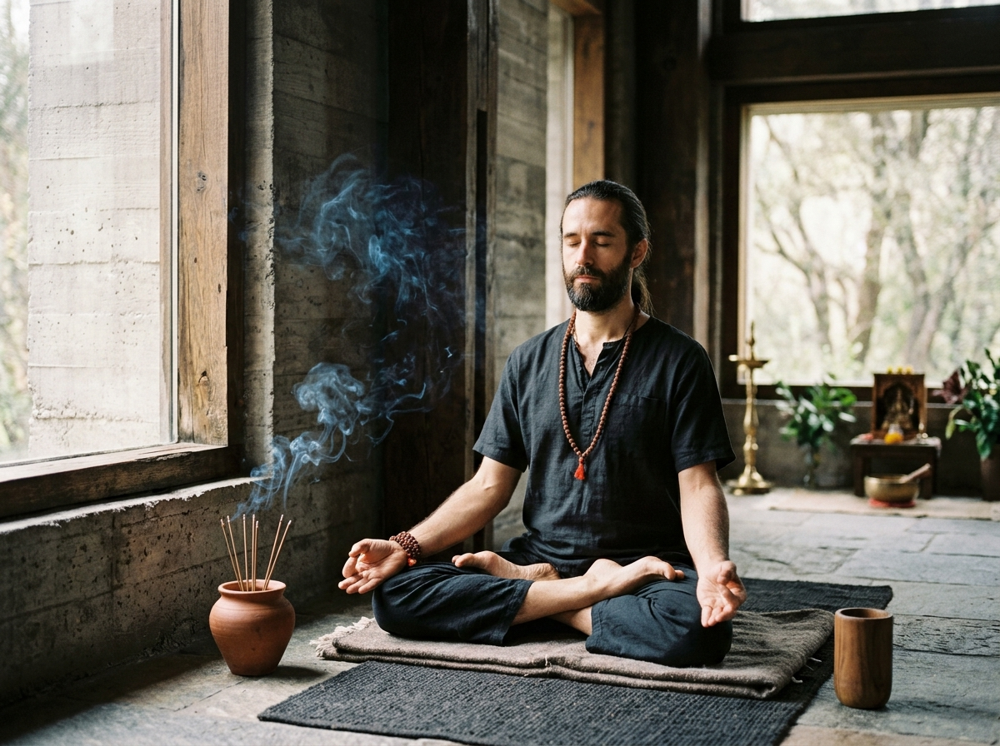

12 Semanas · En Vivo + GrabadoFacilitador Certificado Siete Centros
Maestría en Kriya Yoga & Canal Sushumna
Transmisión directa de la ciencia sagrada para magnetizar la columna, activar los bīja mantras y transmutar la energía vital en dicha no dual.